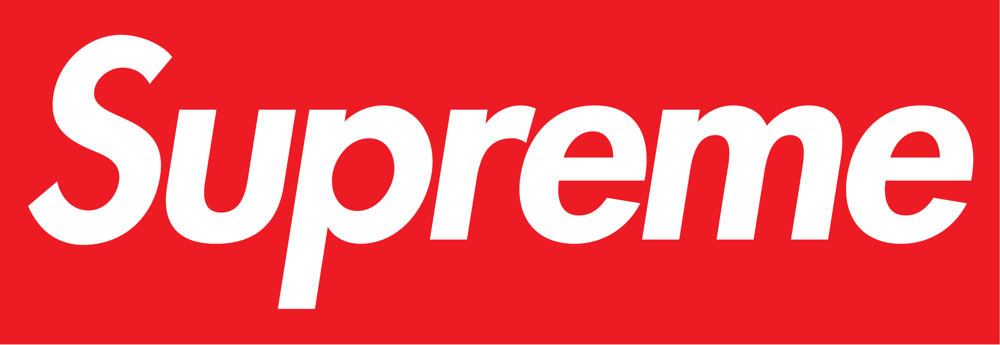
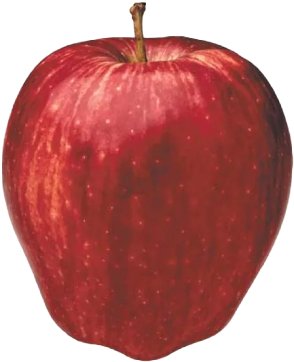
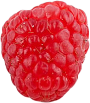
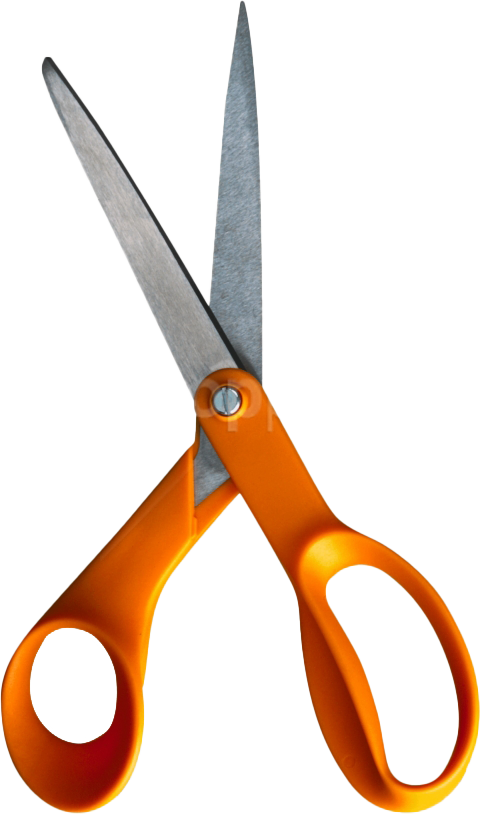

back
Q1
What do you think of garden gnomes?
long pause ? Like…I don’t know. Honestly I’d say pretty tacky. Do you mean garden gnomes in the sense of people just having them on their lawn…?
Yeah!
I think they’re kind of tacky but maybe they could look neat in certain….like if people change up their garden in the spring and then the summer. Different kinds of looks.
So would you have a in your garden?
No not personally, unless it had some kind of reference that called out to me. Like oh my god that’s totally me and I want that. But I can’t really think of what that would be…
Say someone in your house really wanted a , would you be OK with having it in your own personal garden? Or would you be like hey you gotta get rid of that?
Hm. Ok, since I’m at my parent’s house, I wouldn’t really care because it’s not my garden. If it was my personal place, I’d be like no that’s not going there. Unless there was a really, really good reason.
Q2
Say we finish the interview and you step outside the office and find a lottery ticket that ends up winning $10 million dollars. What would you do?
I would first help any family I have that has debt, which isn’t too many, but I would help them with that. I’d try to be smart with it. I’d want to invest some money first, but I’d feel like my first objective would be to buy a condo or two.
And would you still work?
Yep! I feel like if I left this interview and found that lottery ticket today I would still pursue my education in the fall because I can fail now and still be OK. I’d still want to try something new. I wanna go out there and not just spend my money on needless things (  bricks, anyone?).
So if you got a job offer and you still found the lottery ticket, would you accept the offer?
Yeah. I think it would be a good idea to keep my position and see what comes of it. It would be a good opportunity for me to grow.
Q3
Are you a hunter or a gatherer?
long pause I would say maybe both. It depends on the situation. Like, you’re not going to hunt something that’s dangerous.
  
Q4
If you had a choice between two superpowers, being invisible or flying, which would you choose?
I think invisibility is more practical. If you think about flying, you have to be realistic in the sense that it’s colder the higher you go up. So you’d probably freeze up there and it wouldn’t be fun. But then what…you could just fly all over?
In what situation would you want to be invisible? When would that be useful?
I feel like maybe sneaking into concerts or amusement parks.
You could just fly into those places too though, couldn’t you?
Yeah, but people would see you.
People will just think you are a  . You could fly into a little discrete corner.
. You could fly into a little discrete corner.
Nobody sees a flying human and thinks they’re a .
Have you seen one?
laughing No, but I wouldn’t forget if I did.
Q5
If you were a pizza delivery man, how would you benefit from scissors?
As a pizza delivery man? Did you say  ?
Yes.
Um... long pause Maybe you put the receipt on the pizza box?
What do you mean? With ?
Yeah, you’d cut a piece of tape and put the receipt on the pizza box.
Ohh like you’d cut the tape? What if it was one of those Scotch tapes that you can just rip off?
Nah we use scissors here.
back
Q1: Tell me a little bit about yourself.
I am currently 27 years old. I work a part-time job at a movie theater that I’ve been at for almost…four years, I want to say. I’ve done a lot of different things since I’ve been there that long. I do almost everything except the manager role, and some of the heavier lifting I can’t do because of a back problem I have. Other than that I live at my family’s house right now. I’m currently looking to go back to school in the fall for a social service worker course. It’s been a little while since I’ve been in school, but I’m excited and nervous to go back and start something new.
> Why are you nervous?
Just because of how long it’s been since I’ve been out of school. And I’ve never considered myself someone that’s academically inclined. But I feel like the program I’m looking at suits my personality and my interests, so it should be maybe a little easier for me. I’m hoping.
> How does it suit your personality?
I feel like since the last time I’ve been in school I’ve done a lot of thinking and reflecting on what I might want to go back to school for; the things I like doing; the things I don’t like doing…and one of the things I enjoy doing is helping people and solving problems. So I found that being a social service worker opens a lot of different avenues for things like that. Either helping with people’s housing, or jobs, or family problems, or drug problems. So I’m looking into a broad perspective of things to see which maybe pulls me in a direction.
Q2: Why do you want this job?
Because I am sick of working part-time jobs, and full-time labor jobs I can’t really do anymore because of my back. So I feel like this is the route to take at this point in my life, instead of just being at a stand-still thinking about what I want to do.
> And it is personal to my company?
In what context do you mean?
> Do you want this job because you like this company or because you’re looking for a particular role?
I feel like this company is a good place for me to start and grow and see which areas suit me best. So I’m just looking for a starting position.
Q3: What are your biggest strengths and weaknesses?
Uhh…that’s a good question. *laughter, looking through papers*
> What are you looking at?
I’m just referencing some of my notes.
> Sorry, I know this is the literal worst question you can get, ever. That’s why I’m asking you.
*reading from paper* I feel like maybe once I start something I have a hard time putting it down. I like to complete things and get them finished. These are weaknesses AND strengths kind of; I can kind of flip them around I’d say. I can find strengths in my weaknesses. I’m very dedicated to a task and need to get it done once I start. I feel like I work well in groups and by myself.
Q4: What is your leadership style?
I personally like having people make mistakes so they can learn from them. That would be my leadership style, not my preferred way of learning myself. I kind of like the saying “the wise learn from history and foolish people make mistakes” so—
> Foolish people make mistakes?! That’s not a very nice expression.
No, it’s in the way that if something has been done before (and there have been mistakes made) why would you go the same route when you can learn from how other people have overcome those things. It’s learning from other people’s faults.
> Does that mean you would let your employees make mistakes and learn from it?
It depends what kind of mistakes they were. If I found that they were mistakes that were really big mistakes that could hurt the company or the workers, then I probably wouldn’t let that happen. But if they’re just small errors like making the wrong document or filling out the wrong paperwork, those things you just learn from them and pay more attention to detail in the future.
> Do you have a preference over being a manager versus an employee?
I personally would rather be an employee. I like having instructions that I can follow. I’m not always the “I’m going to make the rules and now you guys have to follow them” because like I said, I don’t really like making mistakes, so I don’t want to be responsible for those kinds of decisions.
Q5: Describe a time when you had to solve a problem, but you didn’t have all the necessary information about it beforehand.
Oh, just recently. With all the COVID mandates we had. I was having to enforce different rules on different days throughout the same week because they were always changing in March. I had some people that thought we needed masks, and some that didn’t, and some that thought we needed vaccines, and some that didn’t. Things were changing on a day to day basis, so I felt like I didn’t really have control over that situation as much as I would’ve liked.
> How did you solve the ambiguity of what to do?
The best thing in situations like that is to just stay calm and try and think things out without letting your emotions get in the way. So I just said told guests that these were the rules that I was told, I’m not sure what they heard, however I can call a manager to clear up the situation for both of us if they’d like, but what I was told is that we require masks and we don’t need vaccinations anymore. I was just telling them what I was told, and how we could escalate it to someone higher up if they’d prefer.